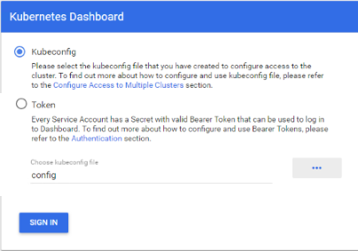

Kubernetes
Prerequisites
Hyper-V
Hyper-V InstallPowershell > 6.2
https://github.com/PowerShell/PowerShellChocolatey
https://chocolatey.org/docs/installationChoco Essentials
choco install vscode
choco install cmder
choco install googlechrome
choco install openssh
Install Docker Desktop for Windows
choco install docker-desktop
choco install kubernetes-helm
Verify Instalation
kubectl version
kubectl config current-context
kubectl cluster-info
kubectl get nodes
Installating the Kubernetes Dashboard
kubectl apply -f https://raw.githubusercontent.com/kubernetes/dashboard/v1.10.1/src/deploy/recommended/kubernetes-dashboard.yaml
Enable Dashboard & Create Access Token
kubectl proxy
$TOKEN=((kubectl -n kube-system describe secret default | Select-String "token:") -split " +")[1]
kubectl config set-credentials docker-for-desktop --token="${TOKEN}"
Access Dashboard
http://localhost:8001/api/v1/namespaces/kube-system/services/https:kubernetes-dashboard:/proxy/
Click on Kubeconfig and select the “config” file under C:\Users<Username>.kube\config

Helm
helm init
Verify
kubectl get pods -n kube-system
cd /helm
helm install --name microservice-release --namespace microservices ./microservice-stack
helm status microservice-release
kubectl get pods -n microservices
Node Ports
kubectl get svc -n microservices
Update Release
helm upgrade microservice-release ./microservice-stack
Delete and Purge
helm delete --purge microservice-release
Reset Kubernetes
References
http://collabnix.com/kubernetes-dashboard-on-docker-desktop-for-windows-2-0-0-3-in-2-minutes/